| 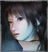 | 黑澤怜 | | くろさわ れい Rei Kurosawa | CV: 皆川純子 | | 本遊戲的主角。二十三歲自由攝影師，由於工作緣故來到一個叫「幽靈屋敷」的廢墟。無意中看到了因為車禍身亡的戀人的人影，追逐進入了恐怖的世界。正當她在調查時發現身上開始蔓延着蛇型的紋身，而惡夢亦慢慢侵蝕着她的現實生活。 |
| 雛咲深紅 | | ひなさき みく Miku Hinasaki | CV: わくさわりか | | 十九歲。經歷冰室邸的恐怖體驗，漸漸從失去哥哥的痛苦中恢復過來。一直以為自己已失去靈力的她如今靈力已經復原，現在她成為黑澤怜的助手一起前往「幽靈屋敷」拍攝靈異照片。對失去的哥哥懷着強烈思念的她同時被「沉眠之家」所吸引。 |
| 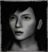 | 天倉螢 | | あまくら けい Kei Amakura | CV: 織田優成 | | 二十六歲自由作家。黑澤怜死去戀人的好友，和優雨無論工作或私人之間都很密切。在好友過世後便負起照顧黑澤怜的責任。受怜的邀請前往「幽靈屋敷」調查。為了幫助被囚禁在夢中「沉眠之家」的姪女，自己也漸漸被夢所引誘。 |
| 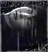 | 麻生優雨 | | あそう ゆう Yu Aso | CV: 黒田崇矢 | | 二十四歲民族學編輯員，黑澤怜的未婚夫。在一次旅行中怜駕着車子發生車禍中喪生。優雨是雛咲真冬和天倉螢的好友。優雨逝世前正和螢一起調查有關都巿傳說中「沉眠之家」的事。 |
| 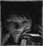 | 雛咲真冬 | | ひなさき まふゆ Mafuyu Hinasaki | | | 雛咲深紅的哥哥。在二十三歲時在冰室邸調查中行蹤不明。兩年後，深紅在「幽靈屋敷」看到真冬模糊的身影。真冬是麻生優雨的好友，他曾托付優雨一旦自己發生什麼意外時代為照顧深紅。 |
| 天倉澪 | | あまくら みお Mio Amakura | | | 十五歲，天倉螢的姪女 ( 外甥 )。在本作故事發生兩個月前從水壩失蹤者事件中唯一逃脫出來的人。因為對自己親手殺死了姐姐繭而感到無比的愧疚。其後一度失去意識，思念姐姐而被夢囚禁著。 |
| 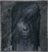 | 雪代 ( 久世 ) 零華 | ゆきしろ ( くぜ ) れいか
Reika ( Kuze ) Yukishiro | CV: 皆川純子 | | 刺青巫女，原名雪代零華。由於所居住的村子被毀，失去所有親人的她以巫女身分乘坐駕籠被迎接到久世家。後因戀人在面前被殺，瞬間的悲傷與憤怒導致破戒，把身上的柊反彈回原本持有者。 |
| 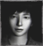 | 久世 ( 乙月 ) 要 | | くぜ ( おとずき ) かなめ Kaname ( Otozuki ) Kuze | | | 久世鏡華和柏木秋人的兒子，由於久世家族禁止生男而被流放。逃出後被乙月家收養，長大後在村子認識雪代零華並相戀，最後在久世雨音幫助下進入棘獄內看零華時被久世夜舟手刃喪命。 |
| 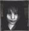 | 久世鏡華 | | くぜ きょうか Kyoka Kuze | | | 久世要和久世雨音的母親。因為柏木秋人的離開而身懷思念，終日向着鏡臺持續梳着被想念之人讚美的長髮，每天哭泣着等待絕不會回來的人。在她的鏡台中一直保存著秋人送給她的珍貴禮物。 |
| 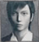 | 柏木秋人 | | かしわぎ あきと Akito Kashiwagi | | | 民俗學者。久世家的傳統是禁止男性，只是為了延續血脈傳宗接代而允許秋人滯留在久世家。早上被關在與屋子分開的房間，夜晚便被招至久世鏡華的房間裡。後與鏡華相戀，當鏡華懷孕後被流放。 |
| 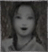 | 久世雨音 | | くぜ あまね Amane Kuze | CV: 黒葛原未有 | | 乙月要同母異父的妹妹。四鎮女之一，守護南面人形祭壇。從媽媽那裡得知哥哥的事，後來負責照顧久世零華。最後因為協助哥哥，把要引導入久世之宮觸犯禁忌而被當主下令以咎打處死。 |
| 久世冰雨 | | くぜ ひさめ Hisame Kuze | | | 四鎮女之首，守護北面的人形祭壇。亦是鎮女中最忠心的一個，在雨音觸犯禁忌後受命把她鑿穿，執行最後的咎打時把時雨和水面殺死。被困在回廊仍持續她的職責在牆上釘打着人形。 |
| 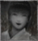 | 久世時雨 | | くぜ しぐれ Shigure Kuze | | | 四鎮女之一，守護東面的人形祭壇。和冰雨、水面一樣以鎮女身分被迎接到久世家。破戒後負責照顧久世鏡華，一直為殺死雨音的事感到內疚，最後和水面在封印屋裡狹間的儀式中被殺。 |
| 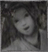 | 久世水面 | | くぜ みなも Minamo Kuze | | | 四鎮女之一，守護西面的人形祭壇。和冰雨、時雨一樣以鎮女身分被迎接到久世家，處理久世境內的所有事情。為能釘打真正的巫女感到高興。死後依然在屋裡尋找有誰可以釘。 |
| 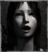 | 瀧川吉乃 | | たきがわ よしの Yoshino Takigawa | | | 墜機事件的唯一生還者。在還沒獲救時候有四天被親人和眾多的屍體包圍。一直被內心產生的愧疚包圍，在醫院內抱着強大思念而被引到「沉眠之家」。在夢中也持續躲避亡者的影子。 |
| 淺沼切子 | | あさぬま きりこ Kiriko Asanuma | | | 淺沼家被強盜殺害，切子因為躲在廚櫃中逃掉這一劫。看到一家慘死數天後被救出。雙親被殺害的夢所囚禁的女性，無法從狹窄的場所中出來，從怜的夢中通過狹間出現在現實怜的家。 |
| 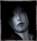 | 葛原蒔枝 | | くずはら まきえ Makie Kuzuhara | | | 葛原梢的母親。尋找行蹤不明的丈夫而徬徨的母親。知道丈夫的下落不明的事卻不敢告訴的年紀還小的女兒。一直在屋裡向任何人打探丈夫的行蹤。被女兒知道的罪的意識和自己的悲哀折磨着。 |
| 葛原梢 | | くずはら こずえ Kozue Kuzuhara | | | 葛原蒔枝的女兒。年幼外出遊玩時父親為了替她撿球而意外身亡。認為父親的死是自己的責任但不敢告訴母親，在屋裡尋找行蹤不明的父親。一直被罪惡意識和為母親着想的意識折磨着。 |
| 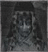 | 久世夜舟 | | くぜ やしゅう Yashu Kuze | CV: 山口奈々 | | 久世家的女當主。為了久世家的規矩而守護儀式的進行，破戒時在棘獄近距離承受刺青巫女所反彈出來的柊，不能忍受那痛苦而把自己關在御簾裡。身上充滿着柊的她最後也被沒入狹間成為怨靈。 |
| 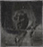 | 鳴海天涯 | | なるみ てんがい Tengai Narumi | | | 鳴海家的當主。亦是守谷家最後的木工頭，是上代守谷家工匠中被留下來沒成為忌柱的宮大工。破戒後向當主建議修建眠之宮和使用人柱。完成建築後慘殺其他宮大工，最後自殺。 |
| 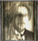 | 麻生邦彥 | | あそう くにひこ Kunihiko Aso | | | 江戶至明治初期的科學家，發明可以拍攝異界的射影機。由於進行靈界相關的研究，被學會視為異端。以響石耳飾發明靈石收音機，後來把試作型射影機和靈石收音機借給朋友真壁清次郎到皆神村拍攝紅贅祭。曾到朧月館作客，發現面具工匠所用的塗料能進一步改良射影機。接著持續在各地調查，最後在冰室邸研究將靈體完全封印的方法時身亡。 |
|